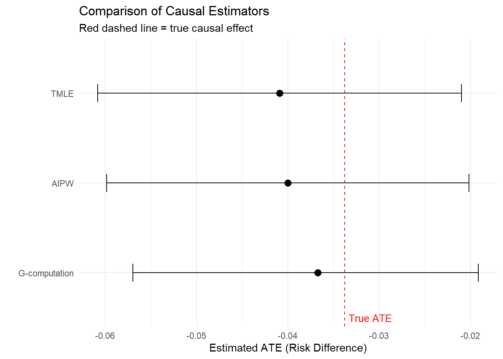

Chapter 2.4: From Question to Estimate — TMLE in Practice
Chapter 2.4: From Question to Estimate — TMLE in Practice
A progressive tutorial for pharmacoepidemiologists
This chapter walks through a complete causal analysis from start to finish, building each estimator step-by-step so you can see exactly where bias enters, how each method addresses it, and why TMLE provides a principled solution.
We use a realistic post-marketing safety scenario: evaluating the cardiovascular safety of a new diabetes drug.
By the end of this chapter, you will have implemented:
A naive (unadjusted) model
G-computation (outcome modeling)
IPTW (treatment modeling)
AIPW (combining both)
TMLE (targeting the estimate)
Each method builds on what came before. Every step includes code, diagnostics, and interpretation.
1. Clinical Motivation
The Regulatory Question
A new sodium-glucose co-transporter 2 (SGLT2) inhibitor, dapagliflozin, has been approved for type 2 diabetes. Post-marketing surveillance data from insurance claims suggest a potential cardiovascular safety signal. The FDA’s Office of Surveillance and Epidemiology asks:
Does initiation of dapagliflozin (vs. a sulfonylurea comparator) increase the 1-year risk of major adverse cardiovascular events (MACE) in adults with type 2 diabetes?
This is a classic active comparator, new user design question.
Key elements
Target population: Adults aged 40-85 with type 2 diabetes initiating a new oral glucose-lowering agent
Treatment strategies: Initiate dapagliflozin (A = 1) vs. initiate sulfonylurea (A = 0)
Outcome: 1-year MACE (composite of MI, stroke, CV death), binary
Intercurrent events: Treatment discontinuation, switching, death from non-CV causes
Decision: Should the label carry a cardiovascular warning? Is a formal safety trial needed?
Why standard regression falls short
A logistic regression of MACE on treatment will confound the effect with differences in baseline health. Patients prescribed newer, more expensive agents may differ systematically from those prescribed sulfonylureas — in age, comorbidity burden, prior cardiovascular history, renal function, and concomitant medications.
We need methods that explicitly separate confounding from causal effects.
2. The Causal Roadmap
We follow a five-step workflow that structures every causal analysis.
Step 1: Define the Causal Question
In plain language: What would happen to 1-year MACE risk if every eligible patient started dapagliflozin, compared to if every eligible patient started a sulfonylurea?
As a counterfactual estimand:
The Average Treatment Effect (ATE) on the risk difference scale:
\[
\psi = E[Y(1)] - E[Y(0)]
\]
where \(Y(a)\) is the potential outcome under treatment strategy \(a\).
\(E[Y(1)]\) = population risk of MACE if everyone took dapagliflozin
\(E[Y(0)]\) = population risk of MACE if everyone took sulfonylurea
A negative \(\psi\) means dapagliflozin is protective; a positive \(\psi\) means increased risk
Step 2: Define the Causal Model
We posit the following causal structure. Confounders \(W\) affect both treatment choice \(A\) and the outcome \(Y\). Treatment \(A\) also affects \(Y\) directly.
The confounders include:
Age — older patients have higher CV risk and may receive different prescriptions
BMI — obesity correlates with both drug choice and CV risk
HbA1c — glycemic control at baseline affects prescribing and outcomes
Prior CVD — history of cardiovascular disease is a strong confounder
eGFR — renal function influences both drug eligibility and CV risk
Statin use — a marker of CV risk management
The DAG (directed acyclic graph):
W (age, BMI, HbA1c, prior CVD, eGFR, statin)
/ \
v v
A --> Y
All arrows from \(W\) point to both \(A\) and \(Y\). There is a direct arrow from \(A\) to \(Y\). There are no arrows from \(A\) back to \(W\) (this is a point-treatment analysis at baseline).
Structural equations:
\(W\) is drawn from the population distribution
\(A = f_A(W, U_A)\) — treatment depends on confounders and unmeasured factors
\(Y = f_Y(A, W, U_Y)\) — outcome depends on treatment, confounders, and unmeasured factors
Step 3: Identify Assumptions
For the causal estimand \(\psi = E[Y(1)] - E[Y(0)]\) to be identified from observational data, we need:
Consistency: The observed outcome for a patient who received treatment \(a\) equals their potential outcome \(Y(a)\). This requires a well-defined intervention — “initiate dapagliflozin” must mean the same thing across patients. In practice, we define treatment as filling a new prescription.
Exchangeability (no unmeasured confounding):\(Y(a) \perp\!\!\!\perp A \mid W\) for all \(a\). Conditional on measured baseline covariates, treatment assignment is as-good-as-random. This is the most vulnerable assumption. We cannot test it, but we can make it more plausible by adjusting for a rich set of confounders.
Positivity:\(0 < P(A = 1 \mid W = w) < 1\) for all \(w\) with \(P(W = w) > 0\). Every patient type has some chance of receiving either drug. Violations occur when, for example, patients with severe renal impairment are never prescribed dapagliflozin.
Each assumption is untestable but can be made more or less plausible by study design.
Step 4: Map to a Statistical Estimand
Under the three assumptions above, the causal estimand equals a statistical quantity we can estimate from data:
This is the G-computation identification formula. It says: fit a model for \(E[Y \mid A, W]\), predict under \(A = 1\) and \(A = 0\) for every patient, and average over the population distribution of \(W\).
Equivalently, using the propensity score \(g(W) = P(A=1 \mid W)\):
# Unadjusted logistic regressionnaive_mod <-glm(Y ~ A, family = binomial, data = dat)summary(naive_mod)
Call:
glm(formula = Y ~ A, family = binomial, data = dat)
Coefficients:
Estimate Std. Error z value Pr(>|z|)
(Intercept) -2.09095 0.05166 -40.475 < 2e-16 ***
A -0.97889 0.15095 -6.485 8.89e-11 ***
---
Signif. codes: 0 '***' 0.001 '**' 0.01 '*' 0.05 '.' 0.1 ' ' 1
(Dispersion parameter for binomial family taken to be 1)
Null deviance: 3130.5 on 4999 degrees of freedom
Residual deviance: 3078.2 on 4998 degrees of freedom
AIC: 3082.2
Number of Fisher Scoring iterations: 5
What went wrong? The naive estimate is biased because dapagliflozin patients differ systematically from sulfonylurea patients. The treatment groups are not exchangeable. The naive estimate conflates the drug effect with the confounding by indication.
4B. G-Computation (Outcome Modeling)
G-computation directly implements the identification formula by modeling \(E[Y \mid A, W]\), then standardizing.
Step 1: Fit the outcome model
# Parametric outcome model (logistic regression)# We include main effects and key interactionsq_mod <-glm(Y ~ A + age + bmi + hba1c + cvd + egfr + statin + A:cvd +I(age^2),family = binomial, data = dat)
Step 2: Predict counterfactual outcomes
# Create counterfactual datasetsdat1 <- dat %>%mutate(A =1)dat0 <- dat %>%mutate(A =0)# Predict potential outcomes for each individualQ1 <-predict(q_mod, newdata = dat1, type ="response")Q0 <-predict(q_mod, newdata = dat0, type ="response")
Key insight: G-computation gave a much better estimate than the naive approach by adjusting for confounders. But it depends entirely on the outcome model being correct. If we misspecified the functional form (missed interactions, nonlinearities), the estimate would be biased.
4C. IPTW (Treatment Modeling)
IPTW takes a different approach: instead of modeling the outcome, it models treatment assignment and reweights the data to create a pseudo-population where confounders are balanced.
Step 1: Estimate the propensity score
# Propensity score modelg_mod <-glm(A ~ age + bmi + hba1c + cvd + egfr + statin +I(age^2) + age:cvd,family = binomial, data = dat)dat <- dat %>%mutate(ps =predict(g_mod, type ="response"))# Summary of propensity scoressummary(dat$ps)
Min. 1st Qu. Median Mean 3rd Qu. Max.
0.002505 0.146338 0.220684 0.234400 0.314028 0.632319
Good overlap means every type of patient has some chance of getting either drug. If the distributions barely overlap, IPTW will produce extreme weights and unstable estimates.
If weights are extreme, truncation can improve stability at the cost of a small amount of bias:
# Truncate at 1st and 99th percentilestrunc_lower <-quantile(dat$sw, 0.01)trunc_upper <-quantile(dat$sw, 0.99)dat <- dat %>%mutate(sw_trunc =pmin(pmax(sw, trunc_lower), trunc_upper))risk1_trunc <-with(dat, sum(sw_trunc * Y * (A ==1)) /sum(sw_trunc * (A ==1)))risk0_trunc <-with(dat, sum(sw_trunc * Y * (A ==0)) /sum(sw_trunc * (A ==0)))iptw_ate_trunc <- risk1_trunc - risk0_trunccat("IPTW ATE (truncated weights):", round(iptw_ate_trunc, 4), "\n")
IPTW ATE (truncated weights): -0.0472
Key insight: IPTW adjusts for confounding through the treatment model alone. It does not use information about the outcome-confounder relationship. If the propensity score model is wrong, IPTW is biased. If positivity is limited, weights become extreme and the estimate becomes unstable.
4D. AIPW (Augmented Inverse Probability Weighting)
AIPW combines the outcome model and the treatment model. It is doubly robust: consistent if either model is correct.
# Using models from previous steps:# Q1, Q0 = predicted outcomes from g-computation# ps = propensity scores from IPTW# AIPW componentsmu1_aipw <-with(dat, mean( Q1 + A * (Y - Q1) / ps))mu0_aipw <-with(dat, mean( Q0 + (1- A) * (Y - Q0) / (1- ps)))aipw_ate <- mu1_aipw - mu0_aipwcat("AIPW risk (dapagliflozin):", round(mu1_aipw, 4), "\n")
The efficient influence curve (EIC) for the ATE gives us individual-level “scores” that measure each observation’s contribution to the estimate. The variance of these scores provides valid standard errors.
Key insight: AIPW improves on both g-computation and IPTW by using both models. However, AIPW does not “target” its initial estimates — it can produce predicted probabilities outside [0, 1], and it does not solve the efficient influence curve equation exactly when machine learning is used. TMLE addresses both issues.
4E. TMLE (Targeted Maximum Likelihood Estimation)
TMLE is the centerpiece of this chapter. It combines the best properties of all previous methods:
Uses both outcome and treatment models (doubly robust)
Targets the specific estimand of interest (not just fitting a good outcome model)
Respects natural parameter bounds
Solves the efficient influence curve equation, ensuring valid inference
Integrates naturally with machine learning (Super Learner)
Conceptual overview
TMLE works in three stages:
Initial estimate: Fit an outcome model \(\hat{Q}^0(A, W) = \hat{E}[Y \mid A, W]\) (like g-computation)
Targeting step: Update \(\hat{Q}^0\) using information from the propensity score to reduce bias for the specific estimand
Substitution estimate: Plug the updated \(\hat{Q}^*\) into the G-computation formula
The targeting step is what makes TMLE special. It uses the clever covariate — a function of the propensity score — to fluctuate the initial outcome model in the direction that solves the efficient influence curve equation.
Step-by-step implementation
Step 1: Initial outcome model
# Same as g-computation — fit E[Y | A, W]q_init <-glm(Y ~ A + age + bmi + hba1c + cvd + egfr + statin + A:cvd +I(age^2),family = binomial, data = dat)# Initial predictionsQ1_init <-predict(q_init, newdata = dat %>%mutate(A =1), type ="response")Q0_init <-predict(q_init, newdata = dat %>%mutate(A =0), type ="response")QA_init <-predict(q_init, type ="response") # predictions at observed A
Step 2: Estimate the propensity score
# Same model as IPTWg_fit <-glm(A ~ age + bmi + hba1c + cvd + egfr + statin +I(age^2) + age:cvd,family = binomial, data = dat)ps_tmle <-predict(g_fit, type ="response")# Bound propensity scores away from 0 and 1 for stabilityps_tmle <-pmax(0.01, pmin(0.99, ps_tmle))
Step 3: Compute the clever covariate
The clever covariate \(H(A, W)\) is the bridge between the treatment model and the outcome model:
# Clever covariate for each observation at their OBSERVED treatmentH_A <- dat$A / ps_tmle - (1- dat$A) / (1- ps_tmle)# Clever covariate under A=1 and A=0 (for prediction)H_1 <-1/ ps_tmleH_0 <--1/ (1- ps_tmle)
The clever covariate is large when a patient’s treatment was unlikely given their covariates — exactly the patients who are most informative about the causal effect.
Step 4: Fluctuation (targeting) model
This is the key step. We fit a logistic regression of \(Y\) on \(H(A, W)\) with the initial \(\hat{Q}^0\) as an offset. The coefficient \(\epsilon\) tells us how much to update the initial estimate.
A small \(\epsilon\) means the initial model was already close to solving the EIC equation. A large \(\epsilon\) means the targeting step made a substantial correction.
Step 5: Update predictions
# Apply the fluctuation to counterfactual predictionsQ1_star <-plogis(logit(Q1_init) + epsilon * H_1)Q0_star <-plogis(logit(Q0_init) + epsilon * H_0)
Note that we apply plogis() (the inverse-logit function), which guarantees predictions stay in [0, 1]. This is the “substitution estimator” property of TMLE.
# A tibble: 6 × 5
Method ATE SE CI_low CI_high
<chr> <dbl> <dbl> <dbl> <dbl>
1 Naive -0.0656 NA NA NA
2 G-computation -0.0367 0.0098 -0.0569 -0.0191
3 IPTW -0.0438 NA NA NA
4 IPTW (truncated) -0.0472 NA NA NA
5 AIPW -0.04 0.0101 -0.0598 -0.0201
6 TMLE -0.0409 0.0102 -0.0608 -0.021
# Visualize the comparisonplot_df <- results %>%filter(!is.na(SE)) %>%mutate(Method =factor(Method, levels =c("G-computation", "AIPW", "TMLE")))ggplot(plot_df, aes(x = ATE, y = Method)) +geom_point(size =3) +geom_errorbarh(aes(xmin = CI_low, xmax = CI_high), height =0.2) +geom_vline(xintercept = true_ate, linetype ="dashed", color ="red") +annotate("text", x = true_ate, y =0.5, label ="True ATE",hjust =-0.1, color ="red", size =3.5) +labs(x ="Estimated ATE (Risk Difference)",y ="",title ="Comparison of Causal Estimators",subtitle ="Red dashed line = true causal effect" ) +theme_minimal()

6. Diagnostics
Good estimation is nothing without good diagnostics. This section covers the checks every analyst should perform.
6.1 Propensity Score Overlap
ggplot(dat, aes(x = ps_tmle, fill =factor(A, labels =c("Sulfonylurea", "Dapagliflozin")))) +geom_histogram(bins =40, alpha =0.55, position ="identity") +labs(x ="Propensity score",y ="Count",fill ="Treatment",title ="Propensity Score Distribution by Treatment Group" ) +theme_minimal() +scale_fill_manual(values =c("#4477AA", "#EE6677"))
Interpretation: If the histograms have substantial overlap, the positivity assumption is plausible. Gaps indicate regions where one treatment is rarely or never prescribed — IPTW will struggle there.
6.2 Weight Distribution
cat("--- Unstabilized weight summary ---\n")
--- Unstabilized weight summary ---
summary(dat$w_unstab)
Min. 1st Qu. Median Mean 3rd Qu. Max.
1.003 1.182 1.337 1.991 1.828 30.108
cat("\n--- Stabilized weight summary ---\n")
--- Stabilized weight summary ---
summary(dat$sw)
Min. 1st Qu. Median Mean 3rd Qu. Max.
0.3727 0.8562 0.9480 0.9977 1.0891 7.0573
cat("\nProportion of stabilized weights > 5:", mean(dat$sw >5), "\n")
Proportion of stabilized weights > 5: 6e-04
cat("Proportion of stabilized weights > 10:", mean(dat$sw >10), "\n")
Proportion of stabilized weights > 10: 0
6.3 Clever Covariate Diagnostics
The clever covariate drives the TMLE targeting step. Extreme values indicate potential instability:
clever_cov_df <-tibble(H = H_A,treatment =factor(dat$A, labels =c("Sulfonylurea", "Dapagliflozin")))ggplot(clever_cov_df, aes(x = H, fill = treatment)) +geom_histogram(bins =50, alpha =0.5, position ="identity") +labs(x ="Clever covariate H(A, W)",y ="Count",fill ="Treatment",title ="Distribution of the Clever Covariate" ) +theme_minimal() +scale_fill_manual(values =c("#4477AA", "#EE6677"))
6.4 Influence Curve Diagnostics
The EIC values reveal influential observations. A well-behaved estimator has EIC values centered near zero with no extreme outliers:
Min. 1st Qu. Median Mean 3rd Qu. Max.
-4.80971 -0.02585 0.08820 0.00000 0.12378 24.86376
cat("EIC mean:", round(mean(eic_tmle), 6), "\n")
EIC mean: 0
6.5 Extreme Prediction Check
cat("--- Predicted outcome range (initial model) ---\n")
--- Predicted outcome range (initial model) ---
cat("Q1 range:", round(range(Q1_init), 4), "\n")
Q1 range: 0.0088 0.7715
cat("Q0 range:", round(range(Q0_init), 4), "\n")
Q0 range: 0.0091 0.877
cat("\n--- Predicted outcome range (after targeting) ---\n")
--- Predicted outcome range (after targeting) ---
cat("Q1* range:", round(range(Q1_star), 4), "\n")
Q1* range: 0.0087 0.6419
cat("Q0* range:", round(range(Q0_star), 4), "\n")
Q0* range: 0.0092 0.8777
Notice that TMLE keeps all predictions between 0 and 1 by construction — the logistic fluctuation guarantees this.
7. Interpretation
Translating to regulatory language
Based on the TMLE analysis:
Point estimate: Dapagliflozin is estimated to reduce 1-year MACE risk by approximately 4.1 percentage points compared to sulfonylurea
Confidence interval: The 95% CI is [-6.1, -2.1] percentage points
Risk difference vs. odds ratio: We report on the risk difference scale because it is directly interpretable. An odds ratio would obscure the magnitude of absolute risk change, which is what matters for labeling and clinical decisions.
Regulatory decision
If the confidence interval excludes zero and the point estimate is negative (protective), the data do not support adding a cardiovascular warning. If the CI includes zero, the evidence is inconclusive and further monitoring or a dedicated outcomes trial may be warranted.
Sensitivity to assumptions
Which assumptions are most fragile?
No unmeasured confounding (exchangeability): This is always the weakest link in observational data. Lifestyle factors (diet, exercise, smoking) may confound and are poorly captured in claims data.
Positivity: If some patient types never receive one drug (e.g., patients with very low eGFR are ineligible for SGLT2 inhibitors), the ATE is not identifiable for the full population. Consider restricting to a subpopulation where positivity holds.
Consistency: If treatment initiation is not well-defined (e.g., varying doses), the potential outcomes are ambiguous.
What if unmeasured confounding exists? A sensitivity analysis (E-value or bias analysis) can quantify how strong unmeasured confounding would need to be to explain away the observed effect.
8. Why Super Learner Improves Nuisance Estimation
In the examples above, we used parametric logistic regression for both the outcome and treatment models. In practice, these models may be misspecified — missing interactions, wrong functional forms, or overly rigid assumptions.
Super Learner is an ensemble machine learning method that:
Takes a library of candidate learners (logistic regression, LASSO, random forest, etc.)
Uses cross-validation to evaluate each learner’s performance
Combines them using optimally weighted stacking
Guarantees performance at least as good as the best individual learner (asymptotically)
Why this matters for TMLE
TMLE is doubly robust: consistent if either the outcome or treatment model is correct
But TMLE is efficient when both models are consistent at reasonable rates
Super Learner reduces the risk of misspecifying either model
Cross-validation within Super Learner protects against overfitting
Conceptual demonstration
The following shows how Super Learner would be integrated (this requires the SuperLearner package, which may not run in all webR environments):
library(SuperLearner)# Define learner librarySL_lib <-c("SL.glm", "SL.glmnet", "SL.gam", "SL.mean")# Outcome model via Super LearnerQ_SL <-SuperLearner(Y = dat$Y,X = dat %>%select(A, age, bmi, hba1c, cvd, egfr, statin),family =binomial(),SL.library = SL_lib)# Treatment model via Super Learnerg_SL <-SuperLearner(Y = dat$A,X = dat %>%select(age, bmi, hba1c, cvd, egfr, statin),family =binomial(),SL.library = SL_lib)# View the cross-validated weightsQ_SL$coef # how much each learner contributes to the outcome modelg_SL$coef # how much each learner contributes to the treatment model
The Super Learner automatically determines which learners are most useful and how to combine them — no manual model selection required.
9. Summary of Estimator Trade-offs
Property
G-comp
IPTW
AIPW
TMLE
Uses outcome model
Yes
No
Yes
Yes
Uses treatment model
No
Yes
Yes
Yes
Doubly robust
No
No
Yes
Yes
Respects bounds
Depends
N/A
No
Yes
Efficient (solves EIC)
No
No
Asymptotically
Yes
Works with ML
Partially
Partially
Needs cross-fitting
Naturally
Inference method
Bootstrap
Sandwich
Influence curve
Influence curve
Key Takeaways
The naive estimate is biased because treatment groups differ in baseline characteristics. Never interpret unadjusted comparisons as causal effects.
G-computation is intuitive but depends on correctly modeling the outcome. It implements the identification formula directly.
IPTW tackles confounding through reweighting but is sensitive to positivity violations and propensity score misspecification. Always check weight distributions.
AIPW is doubly robust — consistent if either the outcome or treatment model is correct. But it does not target the parameter of interest and can produce out-of-bounds predictions.
TMLE combines the strengths of all methods. It starts with an outcome model, targets it using the propensity score, respects parameter bounds, and provides efficient inference through the influence curve.
Super Learner reduces the risk of model misspecification by ensembling multiple learners with cross-validated weights. It pairs naturally with TMLE.
Diagnostics are non-negotiable. Always inspect propensity score overlap, weight distributions, covariate balance, and influence curve behavior before trusting any estimate.
Every step of the causal roadmap matters. The estimate is only as valid as the assumptions that identify the causal effect from observational data.
10. Advanced Extensions
The framework in this chapter extends to several important settings:
Dynamic treatment regimes: Treatment rules that depend on patient characteristics (e.g., “prescribe dapagliflozin if eGFR > 45, else sulfonylurea”)
Stochastic interventions: Shift the probability of treatment rather than forcing a deterministic assignment — useful when positivity is limited
Mediation analysis: Decompose the total effect into direct and indirect pathways (e.g., does dapagliflozin reduce MACE partly through weight loss?)
Conditional average treatment effects (CATE): Estimate how the treatment effect varies across subgroups
Variable importance: Identify which confounders matter most for the treatment effect
Longitudinal TMLE (LTMLE) and LMTP: Handle time-varying treatments, confounders, and censoring — covered in subsequent chapters
Each extension follows the same causal roadmap: define the question, specify the causal model, verify assumptions, identify the statistical estimand, and choose an appropriate estimator.